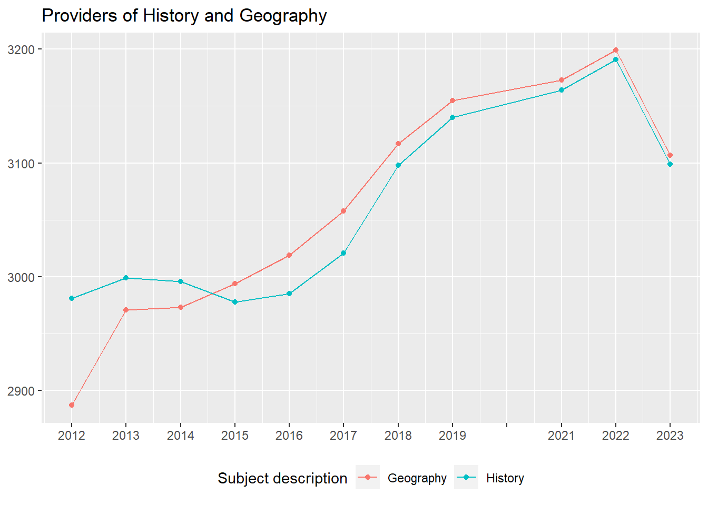
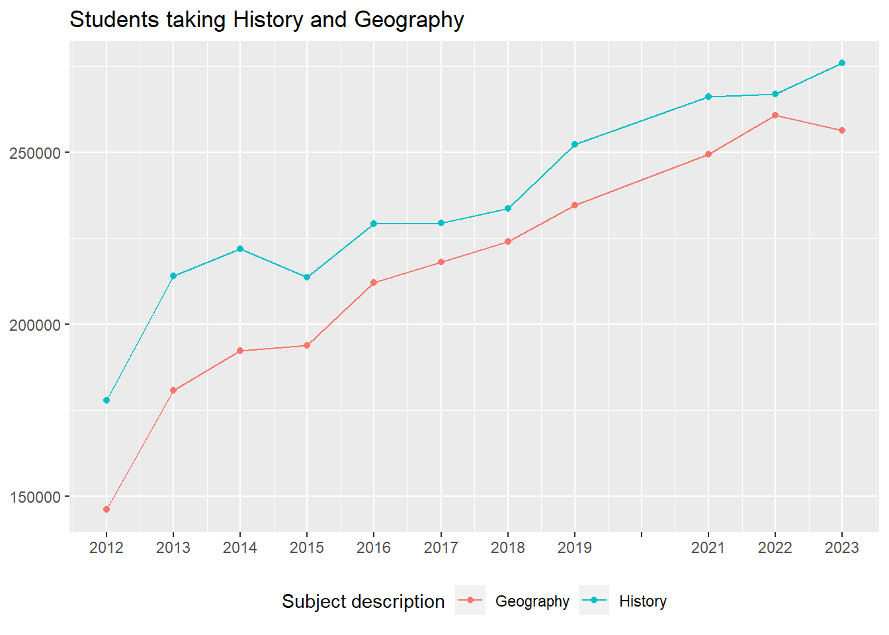
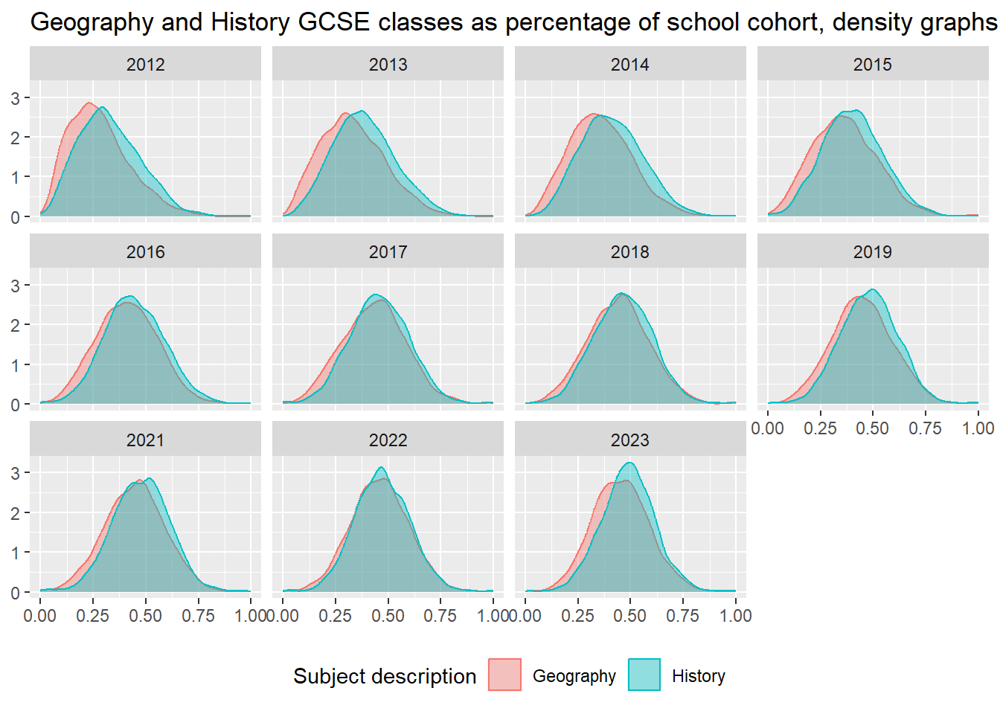
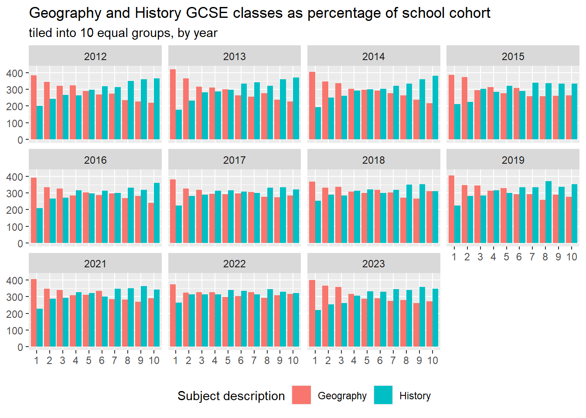

Geography vs History: GCSE entries 2012-2023
1 Overall provision of Geography and History

| Year | Providers | No Geography n | % | No History n | % |
|---|---|---|---|---|---|
| 2023 | 3123 | 16 | 0.5 | 24 | 0.8 |
| 2022 | 3215 | 16 | 0.5 | 24 | 0.7 |
| 2021 | 3196 | 23 | 0.7 | 32 | 1.0 |
| 2019 | 3180 | 25 | 0.8 | 40 | 1.3 |
| 2018 | 3142 | 25 | 0.8 | 44 | 1.4 |
| 2017 | 3108 | 50 | 1.6 | 87 | 2.8 |
| 2016 | 3071 | 52 | 1.7 | 86 | 2.8 |
| 2015 | 3042 | 48 | 1.6 | 64 | 2.1 |
| 2014 | 3019 | 46 | 1.5 | 23 | 0.8 |
| 2013 | 3014 | 43 | 1.4 | 15 | 0.5 |
| 2012 | 3001 | 114 | 3.8 | 20 | 0.7 |
2 Distribution of Geography and History provision

